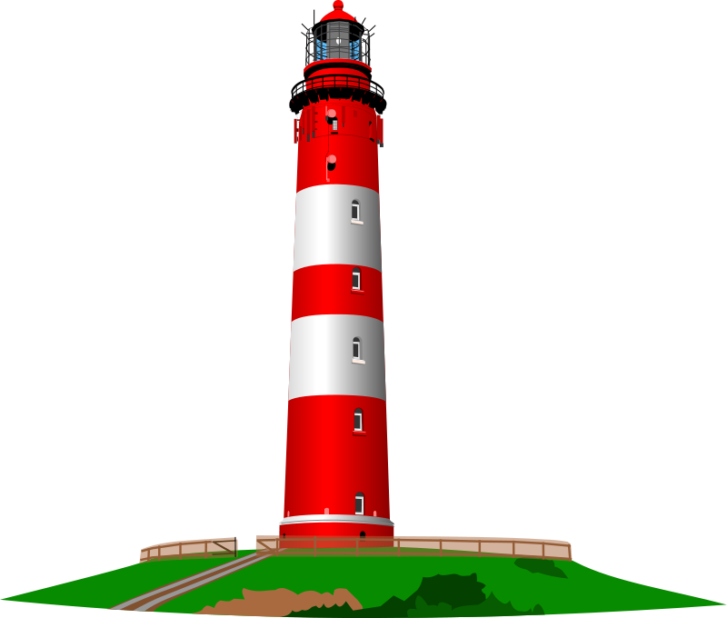
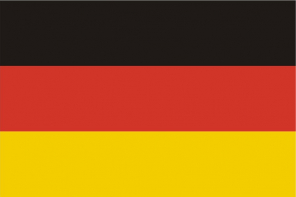
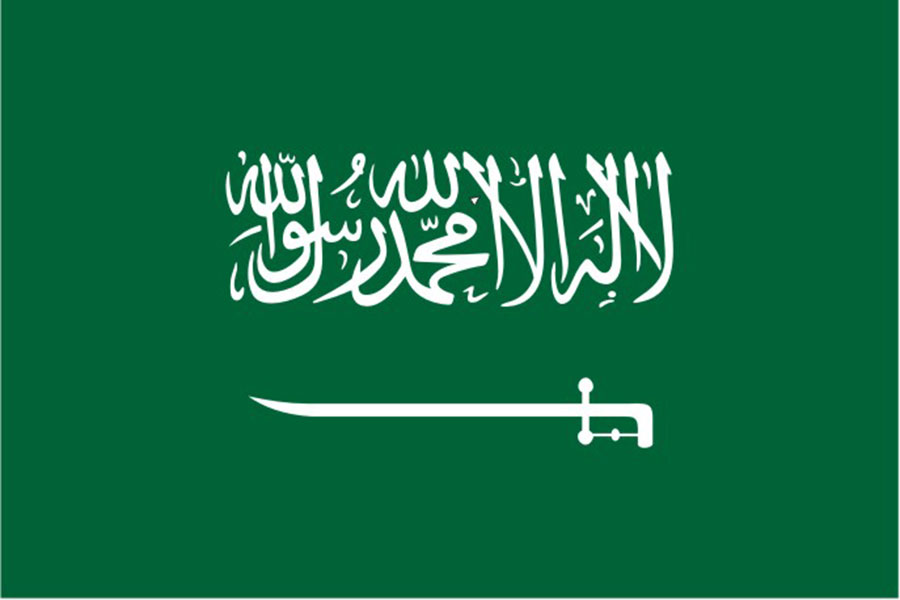

I'm Yerlan
an IT-architect & WEB-developer


About me
📍 Astana, Kazakhstan
Hi, I'm Yerlan Massalin from Astana. For over two decades, I’ve been helping companies bridge the gap between technology and business.
I specialize in modern IT architecture, DevOps, and security — building systems that not only scale, but make sense for people who use them.
My Skills
- 📌 Architecture: TOGAF, BPMN, UML, Microservices
- 📌 Agile & Product Mindset Leadership
- 📌 Cloud/DevOps: Linux, GIT, CI/CD, AWS, Kub-s|Docker
- 📌 IT Strategy & Digital Transformation
- 📌 IT Governance & Compliance (ISO27001, Zero Trust, IAM)
- 📌 Business & IT Alignment, Stakeholder Management
Education & Certifications
- 🎓 MSc in Infosec – Universiti Teknologi Malaysia, 2017
- 🎓 BSc in CSE – Astana Institute of Management 2008
- 📜 PMP – PMI, 2017
- 📜 AWS Solutions Architect – 2025 (planned)
Languages
 GB English – B2 (Upper-Intermediate)
GB English – B2 (Upper-Intermediate) RU Russian – C2 (Fluent)
RU Russian – C2 (Fluent)- KZ Kazakh – B1 (Intermediate)
-  DE German – A1 (Basic)
-  AR Arabic – A1 (Basic - [planned])
- CN Chinese – A1 (Basic - [planned])
Get In Touch
If you believe in taking action even in uncertainty.
Embrace the warrior's path? Let's talk about the power of bold decisions! We can build something great while moving forward with determination.